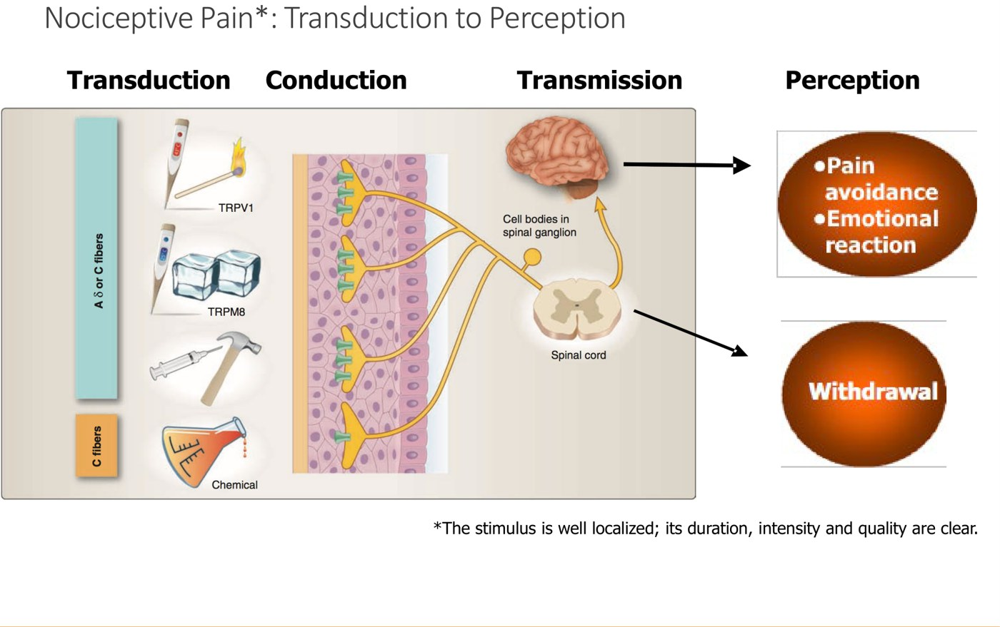
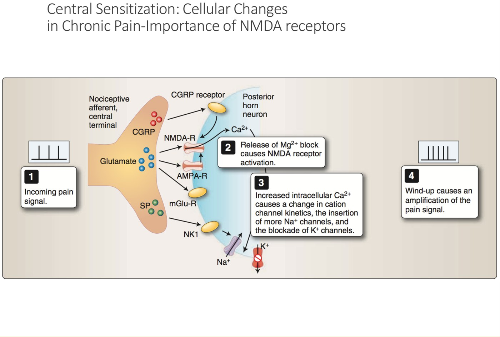
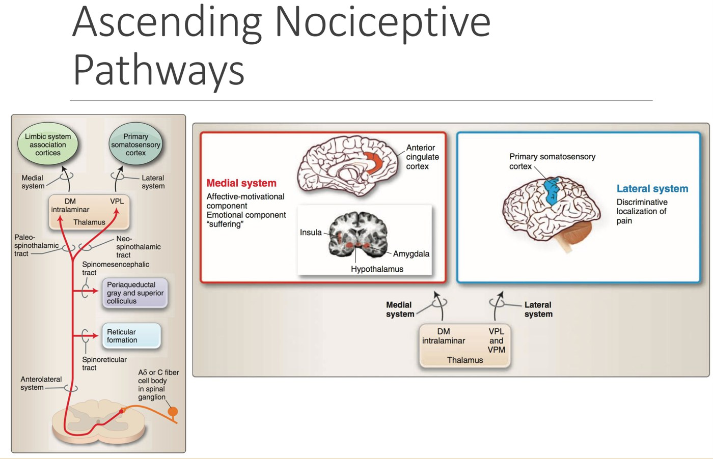
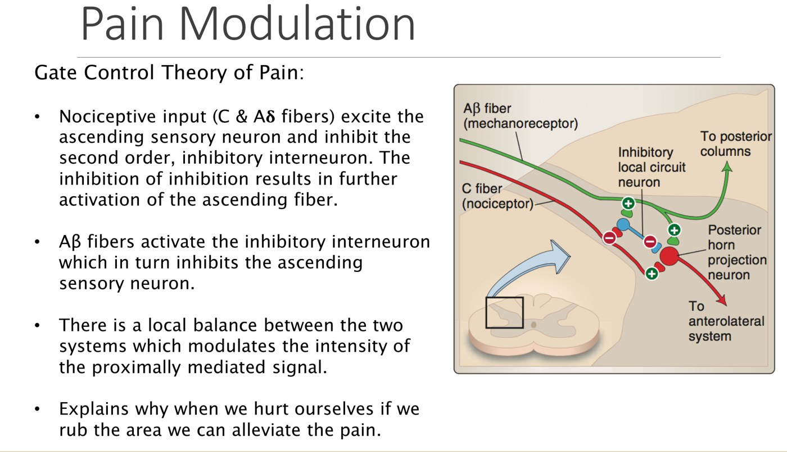
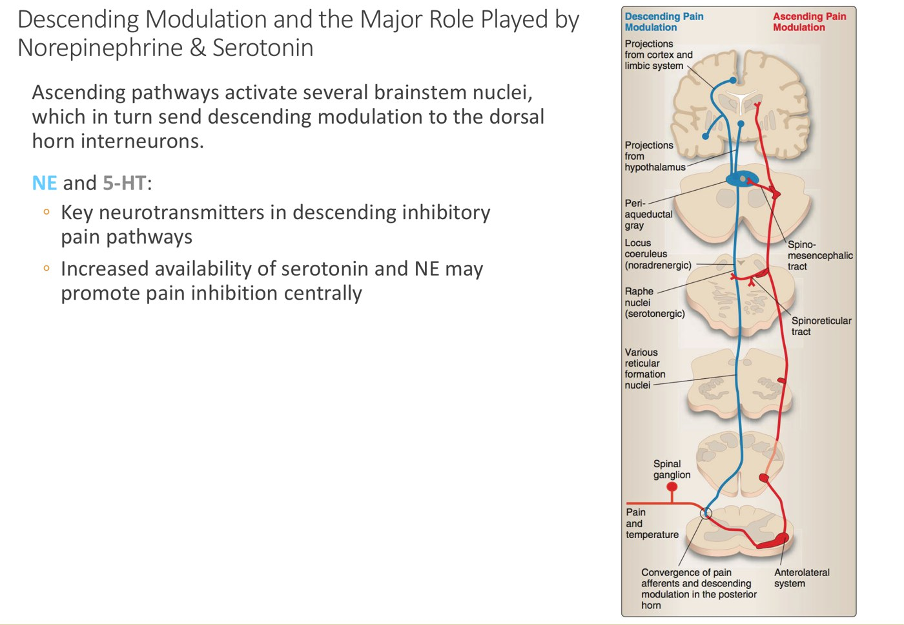
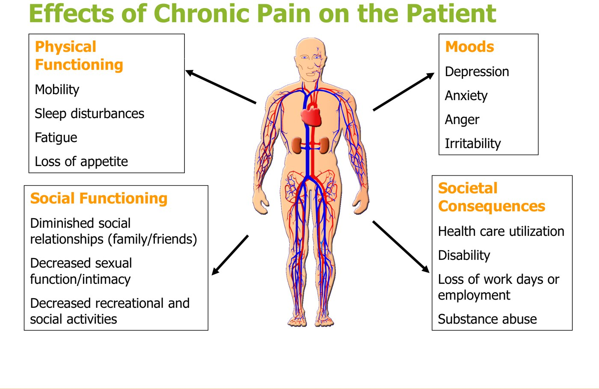
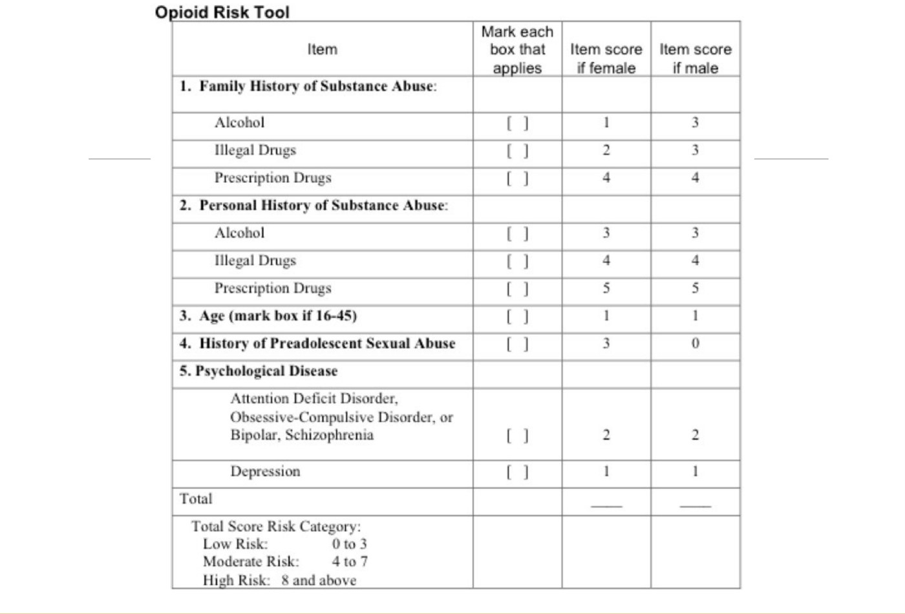
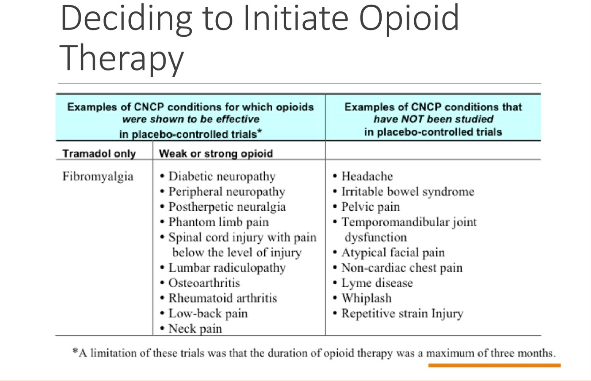
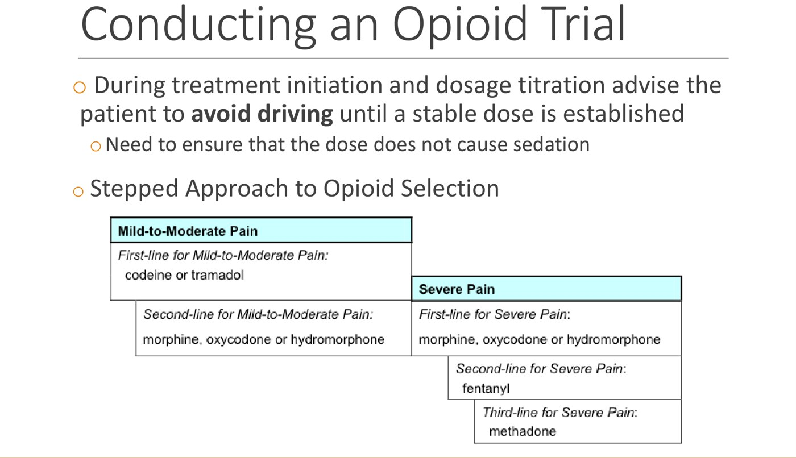
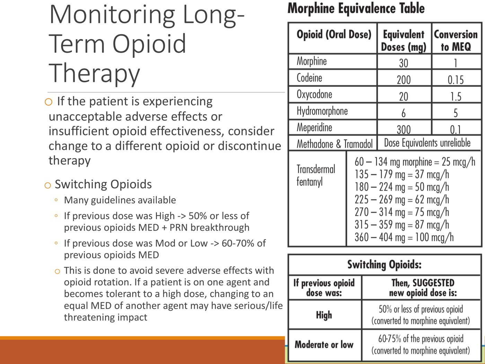

Understanding and Managing Chronic Pain
- Chronic pain = more than 3 months. A minority is ongoing nociceptive pain (OA, inflammatory disease); the majority is neuropathic/centralized: the injury has healed, but wind-up (NMDA), central sensitization and weak descending inhibition keep the pain going.
- Hurt does not equal harm. Fear of pain drives activity avoidance, then deconditioning, depression, anxiety and isolation. The fix is active therapy: individualized, supervised exercise, yoga, tai chi. Passive modalities (TENS, ultrasound, laser) barely beat placebo.
- Team approach: a multidisciplinary pain clinic has physicians, nursing, psychology and OT/PT. Refer when standard analgesia fails or function, mood or social life slip.
- Drugs: multimodal, adjuvants before opioids, start low and go slow. NSAIDs for a 2–3 week trial; acetaminophen max 4 g/day; TCAs and SNRIs help pain (SSRIs only mood); gabapentin/pregabalin for neuropathic pain (sedation, titrate slowly).
- Opioids: START. Should I start (history, screening with the Opioid Risk Tool, urine screen, stop benzos, agreement, consent); Trial (start low, no driving, watchful dose 90 mg MED/day); the A's of monitoring (analgesia, ADLs, adverse effects, aberrant behaviour); Restrict in special groups; Terminate for addiction, misuse or poor effect.
- The goal is management, not cure: function plus at least a 30% drop in pain counts as success.
Learning Objectives
- Distinguish acute, subacute and chronic pain, and nociceptive from non-nociceptive pain.
- Outline the roles of health care providers in chronic pain management: physiotherapy, occupational therapy, kinesiology, psychology.
- Formulate a management plan for chronic non-cancer pain, including non-pharmacological and pharmacological approaches.
Dr. Ricardo Viana (Physical Medicine & Rehabilitation), one 77-minute recording with five knowledge checks. The psychological side (assessment, mood, somatic symptom disorders, CBT) is the companion module, 10.8.
What Pain Is
The pathway, how it's turned up and down, and how chronic pain differs.
The Pain Pathway
Pain is “an unpleasant sensory and emotional experience associated with actual or potential tissue damage, or described in terms of such damage”. It's subjective, shaped by past pain and the behaviours learned from it.

| Fibre | Myelin, speed | Carries | Pain feels |
|---|---|---|---|
| Aβ (large) | Myelinated, 30–70 m/s | Touch, pressure, vibration (“non-nociceptor”) | Sharp, well localized |
| Aδ (small) | Thinly myelinated, 12–30 m/s | Pinprick pain, cold | Sharp, well localized |
| C (small) | Unmyelinated, 0.5–2 m/s | Heat, cold, pressure and chemical pain; warmth | Dull, poorly localized, persistent |
In the dorsal horn the first-order fibre releases glutamate, substance P and CGRP onto the second-order neuron. Its NMDA receptor is normally blocked by a magnesium plug. With constant input, the plug is released and the second-order neuron fires harder than the input warrants: wind-up (central sensitization). The signal then crosses the midline and climbs the spinothalamic tract to the brainstem (reticular formation, periaqueductal grey) and thalamus.
| Ascending system | Route | Tells you |
|---|---|---|
| Lateral | Thalamus (VPL) → primary sensory cortex | Where the pain is (discriminative) |
| Medial | Medial thalamus → limbic system | The emotional, motivational “suffering” side, coloured by past pain |

Wind-up: the Mg²⁺ block lifts and the NMDA receptor amplifies the signal. From the deck.
Medial (affect) and lateral (location) systems. From the deck.Turning Pain Up and Down
| System | How it works |
|---|---|
| Gate control | C and Aδ input excites the ascending neuron and inhibits the inhibitory interneuron. Aβ (touch) input activates that interneuron, which damps the ascending neuron. That's why rubbing a bruise helps (and the idea behind TENS). |
| Endogenous opioids | Enkephalins, endorphins, dynorphins on μ, δ and κ receptors, found at every level (especially the medial system). They hyperpolarize the pre- and postsynaptic neurons, so it takes more to transmit. |
| Descending inhibition | Brainstem nuclei send fibres back to the dorsal horn. Norepinephrine and serotonin are the key transmitters; more of them centrally means more inhibition (the reason TCAs and SNRIs work). |

Gate control. From the deck.
Descending modulation by NE and 5-HT. From the deck.Acute, Subacute and Chronic
| Timing | Features | |
|---|---|---|
| Acute | Seconds; at the same time as the cause | Proportional to the cause; nociceptive |
| Subacute | Hours to days | Hyperalgesia (primary or secondary), allodynia (pain from a non-painful stimulus), spontaneous pain; mostly nociceptive, some neuropathic |
| Chronic | > 3 months | Persistent; may outlast tissue healing; strong affective component; mostly neuropathic, some nociceptive |
Neuropathic pain arises from a lesion (e.g. inflammation) or dysfunction (ectopic firing) of the nervous system itself: spontaneous pain or hypersensitivity, often burning, electric, or pins and needles with numbness.
| Chronic pain | Who | What's going on |
|---|---|---|
| Chronic nociceptive | Minority | Nociceptors kept firing by ongoing disease (inflammatory arthritis, OA). Stays where the disease is. Treat the source; investigate these. |
| Chronic neuropathic / centralized | Majority | Peripheral and central sensitization (wind-up, more glutamate receptors); reduced descending 5-HT and NE. The injury has healed, but pain is out of proportion and spreads beyond it. Leads to pain avoidance: “fear of harm”. |
What Chronic Pain Does to People
- Depression (5–87% in studies; the recording says up to almost 90% have some low mood), often with somatic symptoms (appetite, sleep, energy, weight). Predictors: pain intensity, number of painful areas, frequency of severe pain, other psychosocial factors.
- Anxiety: one of the most disabling parts; fear of pain leads to avoidance, then deconditioning and isolation.
- “It hurts when I move”: avoiding activity relieved the acute pain, so the patient generalizes and avoids anything that might hurt (operant conditioning). Pain lifting at work, so avoid work, so less pain: this becomes absenteeism instead of modified duties and treatment.

Management
The team, the non-drug options, then the drugs and opioids.
The Team
Chronic pain is best managed by a team: drug, non-drug and interventional options, individual and group rehab, and psychology. Refer to a multidisciplinary pain clinic when the patient isn't responding to standard analgesia, when a review of management might open new options, or when activity, mood or social life are slipping because of pain.
| Who | Role |
|---|---|
| Physicians (anaesthesia, neurology, PM&R, internal medicine, psychiatry) | Review investigations and management so nothing's missed; trial medications and interventions; screen mood, activity and isolation and refer on; build a long-term plan for the family doctor |
| Nursing | Medication management, help with interventions, documentation, triage |
| Psychology | Group and individual therapy for depression and anxiety; CBT, pacing, education for families, acceptance |
| Physiotherapy | Prescribes and supervises activity programs; mobility, strength, flexibility; modalities as an adjunct; spinal mobilization; sometimes acupuncture |
| Occupational therapy | Activity participation, pacing, ergonomic and activity modification for ADLs, IADLs and work: better biomechanics, not avoidance |
| Kinesiologist | General exercise prescription and supervision |
| Chiropractor | Spinal manipulation and mobilization (more useful early than chronic), plus activity programs |
Non-Drug Management
In most chronic pain the original injury has healed; the pain comes from faulty signal processing, not ongoing tissue damage. So activity can't do further harm. Returning to activity, stretching and strengthening desensitizes the system and releases endorphins. A little guided discomfort now buys function later. This education is a core part of treatment.
| Passive modality | Evidence |
|---|---|
| TENS (electrodes around the painful area) | Slightly better than placebo, only while it's on; an adjunct |
| Therapeutic ultrasound | Not better than placebo in chronic pain |
| Low-level laser | No evidence it beats placebo, acute or chronic |
| Acupuncture | Eastern = Western; moderately better than placebo, with a short-term gain in function |
| Massage | Works with exercise and education; alone, worse than exercise |
| Spinal manipulation (high velocity, low amplitude) and mobilization (low velocity) | Maybe in the first 6 weeks; no evidence long-term |
Passive modalities are still popular because patients want something done to them, not because of evidence.
Active therapy has good evidence: strengthening, flexibility and cardiovascular work; for spinal pain, core strength and flexibility. It works best individualized and supervised. Yoga (associated with less medication use) and tai chi beat general exercise for back pain; aquafit is another option. “Work hardening” (repetitive work-task drills) doesn't work. Any regular activity beats avoidance. Barriers: fluctuating pain, social support, time and money, and readiness to change.
Medications
| Drug | Use and dose | Watch for |
|---|---|---|
| NSAIDs (ibuprofen, naproxen, ketoprofen): COX-1 and COX-2 | Mild–moderate pain. Limit to a 2–3 week trial. | Upper GI bleed and ulcers, renal toxicity, BP, platelets. Monitor renal function and BP if used longer. |
| COX-2 inhibitors: celecoxib 100 mg daily to 200 mg BID; meloxicam 7.5–15 mg daily | Mild–moderate pain. COX-1 protects the gut and platelets; COX-2 drives inflammation. | Less GI bleeding, but the same kidney and BP effects |
| Acetaminophen | Adult 325–1000 mg every 4–6 h, max 4 g/day; child 10–15 mg/kg every 4–6 h, max 80 mg/kg/day. Often combined (with tramadol; with oxycodone in Percocet). | Mechanism unclear (perhaps central prostaglandin inhibition) |
| TCAs: amitriptyline, nortriptyline | Pain and sleep 10–50 mg at night; mood 100–150 mg | Sedation |
| SNRIs: duloxetine, venlafaxine | Duloxetine 60 mg for pain (up to 120 for mood); venlafaxine 37.5–225 mg for both | Help pain and mood: “two birds, one stone” |
| SSRIs | Mood | No significant effect on pain alone |
| Gabapentin: blocks the α2δ subunit of presynaptic Ca²⁺ channels, so less glutamate, substance P and CGRP | Neuropathic and centralized pain. 900–2700 mg/day divided (300 to 900 mg TID) | Sedation: start 100 mg/day, add 100 mg every 4–7 days. Each change takes 1–2 weeks to show. |
| Pregabalin: same target, 6× the affinity | 75 mg BID to 300 mg BID | Sedation: start 25 mg/day, add 25 mg every 4–7 days |
| Cannabinoids | Nabilone (synthetic THC) 0.5 mg daily up to 5 mg/day divided; cannabis 0.5–2 g/day, higher CBD:THC strains. Also helps sleep, maybe anxiety. | Don't smoke or vape. Inhaled: onset about 15 min, lasts 1–2 h. Oils and edibles: onset 1–1.5 h, last 4–6 h. |
Rules for every drug: multimodal (combine classes), adjuvants before opioids, start low and go slow, monitor effect and side effects, use short trials. Norepinephrine is the main pain-modulating transmitter; serotonin can both damp and amplify pain, which is why SNRIs and TCAs beat SSRIs for pain.
Opioids: the START Principle
The source for all of this is the Canadian opioid guideline at the National Pain Centre (McMaster).
| START | What it means |
|---|---|
| Should I start? | History (pain, medical, psychosocial, psychiatric, meds, personal and family substance use), exam, screening tool, urine drug screen, stop benzodiazepines, treatment agreement, informed consent |
| Trial | Start low, go slow; no driving until the dose is stable; watchful dose 90 mg MED/day |
| A's of monitoring | Analgesia, ADLs, Adverse effects, Aberrant behaviour |
| Restrict use | Pregnancy, adolescents, the elderly, active psychiatric illness (and history of addiction) |
| Terminate | Addiction, misuse, poor effect |
Before starting
- Opioid Risk Tool (ORT), the most used screen (most aren't validated). The strongest items: male, age 16–45, personal or family history of substance abuse (alcohol, illicit or prescription drugs), personal psychiatric history. Opioid addiction prevalence is about 3.3%; aberrant drug-related behaviour about 11.5%.
- Urine drug screen at baseline (current use, honesty of the history) and at random (adherence; a negative screen on prescribed opioids suggests diversion). Point-of-care dips detect classes; lab tests can identify specific drugs.
- Evidence: opioids beat placebo for pain (medium effect) and function (small effect). For fibromyalgia only tramadol works. Many common pains have no good opioid evidence: headache, IBS, pelvic pain, TMJ, whiplash, non-cardiac chest pain.
- Informed consent covers short-term effects (nausea, vomiting, constipation, dizziness, itch) and long-term ones: low HPA and HPG axis activity (low libido, amenorrhea or irregular menses, galactorrhea, erectile dysfunction), worse sleep apnea, and opioid-induced hyperalgesia (pain spreading and worsening with dose increases; it eases as the opioid is withdrawn).
- Treatment agreement, signed by both. The patient won't share or sell, won't get opioids elsewhere, stores them safely, keeps appointments and gives urine samples. The doctor won't refill early and may stop if the agreement is broken. One prescriber, one pharmacy.
- Benzodiazepines plus opioids means sedation, overdose and worse function (especially the elderly). Taper the benzo off first, or start the opioid lower and slower.

Opioid Risk Tool: low 0–3, moderate 4–7, high 8+. From the deck.
Where opioids have (and haven't) been shown to work, in trials of at most 3 months. From the deck.Special populations
| Group | Recommendation |
|---|---|
| History of addiction | Strong recommendation against; if used, keep under 20 mg MED/day |
| Active psychiatric disorder | Weak recommendation against (small net benefit, about 8% addiction risk); stabilize the psychiatric illness first |
| Elderly | Can be safe: lower starting dose, slower titration, longer interval, closer monitoring, stop benzos |
| Adolescents | Only for well-defined somatic or neuropathic pain after adjuvants fail; higher misuse risk |
| Pregnancy | Taper to the lowest dose or off, avoiding maternal and fetal withdrawal; if continued, plan a high-risk delivery (neonatal withdrawal) |
The trial and monitoring
- Choosing the drug (stepped): mild–moderate pain, first codeine or tramadol, then morphine, oxycodone or hydromorphone. Severe pain, first morphine, oxycodone or hydromorphone, then fentanyl, then methadone.
- Optimal dose balances effect (better function, or at least a 30% drop in pain on a VAS), plateau (more drug, no more benefit) and adverse effects.
- Watchful dose: 90 mg morphine equivalent per day. Going above needs clear benefit and close monitoring; for most people more doesn't help.
- Aberrant behaviours: escalating doses or running out early; changing the route (biting or crushing controlled-release tablets, snorting, injecting); illegal activity (multiple doctors, prescription fraud, buying, selling or stealing). Screening tools: SOAPP-R and the Current Opioid Misuse Measure.
- Switching (tolerance or side effects): from a high dose, start the new opioid at ≤ 50% of the old MED plus breakthrough doses; from a moderate or low dose, 60–70%. Cross-tolerance is incomplete, and an equal MED of a new agent can cause serious harm, including respiratory depression.
- Stopping (no response to several opioids): taper by up to 10% of the daily dose at each step, from daily to monthly steps (monthly after a 3-month trial; slower after longer use or if anxious). At about a third of the original dose, halve the taper rate. Withdrawal: nausea, diarrhea, myalgia, chills, hyperalgesia; anxiety, low mood, anger.

Stepped opioid selection. From the deck.
Morphine equivalents and the switching rule. From the deck.Clinical Pearls
- Acute phase: investigate fully and treat the injury (fix the fracture).
- As soon as it's safe, encourage early low-impact activity, walking and normal ADLs and IADLs.
- Use analgesics in short trials, multimodal.
- If activity is limited, isolation is growing, or the patient is becoming dependent on medication, refer to a multidisciplinary pain clinic.
- Educate throughout: why chronic pain develops and why activity matters. A good patient resource: the YouTube video “Understanding Pain: what to do about it in less than five minutes?”
Built from Dr. Ricardo Viana's “Chronic Pain” deck, its recording and the module's knowledge checks. Photographs of modalities and exercise, and the SOAPP-R sample forms, are left out. Notes: the recording says acetaminophen is combined with oxycodone “to make OxyContin or Percocet”; Percocet is the combination, while OxyContin is controlled-release oxycodone alone. The depression figure is 5–87% on the slide and “up to almost 90%” in the recording. The taper slide reads “10% of total daily dose/day to 10% per month”, while the recording gives 10% per month after a 3-month trial.